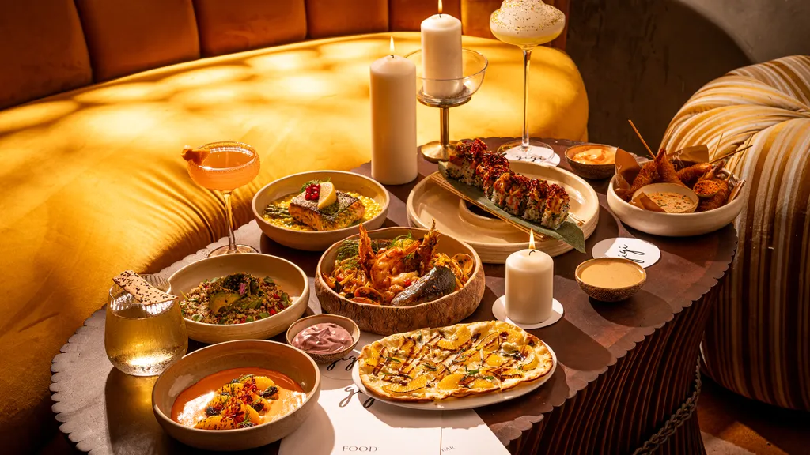
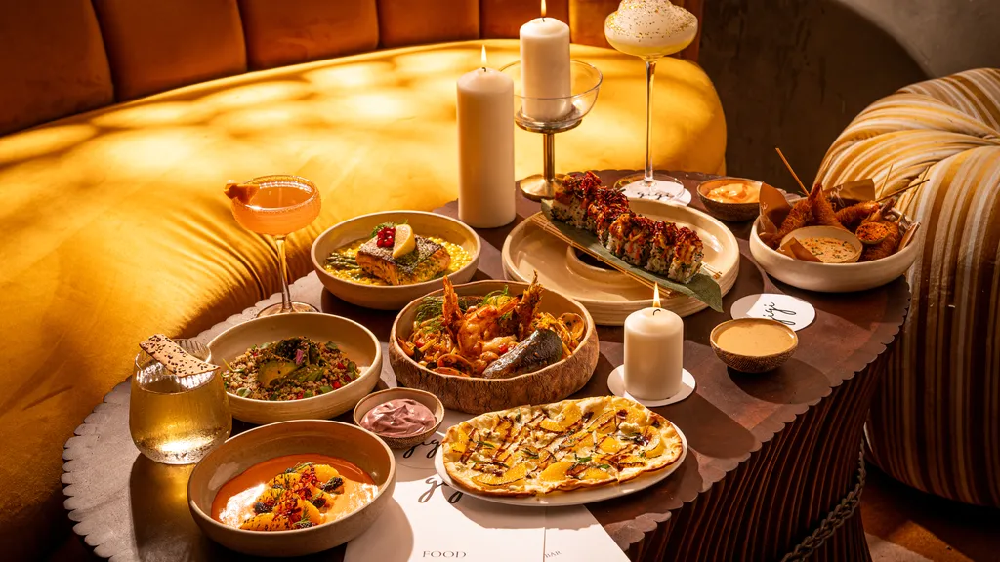

At all-in-one Restaurant, we believe in the magic of exceptional food and warm hospitality.
Located in the heart of Nagpur,
our restaurant has been a beloved dining destination for locals and visitors alike since 2020.
 

Founded by Ritiksha Ingle.All-in-one Restaurant was born out of a passion for [cuisine type or culinary inspiration].
With a vision to create a place where people could come together to enjoy delicious food in a welcoming atmosphere, Ritiksha set out to craft a unique dining experience.
Over the years, we have grown and evolved, but our commitment to quality and community remains unchanged.
At All-in-one Restaurant, we take pride in our culinary philosophy:
Fresh Ingredients: We source the finest, freshest ingredients, often locally grown, to ensure every dish is of the highest quality.
Creative Excellence: Our talented chefs bring creativity and expertise to the kitchen, crafting dishes that are both innovative and comforting.
Sustainable Practices: We are committed to sustainability, incorporating eco-friendly practices in our sourcing, preparation, and service.
Behind every great restaurant is a great team. From our skilled chefs to our attentive waitstaff, everyone at [Restaurant Name] is dedicated to providing an exceptional dining experience. Our team is passionate about food and hospitality, and it shows in everything we do.
Step into [Restaurant Name] and you'll be greeted by a warm and inviting ambiance. Whether you're here for a casual lunch, a romantic dinner, or a celebration with friends and family,
our cozy and stylish interior provides the perfect setting. We strive to create an atmosphere where every guest feels like a cherished member of our extended family.
At All-in-one Restaurant, we promise to:
Deliver exceptional food and service with every visit.
Foster a welcoming environment where everyone feels at home.
Continually strive for excellence in all that we do.